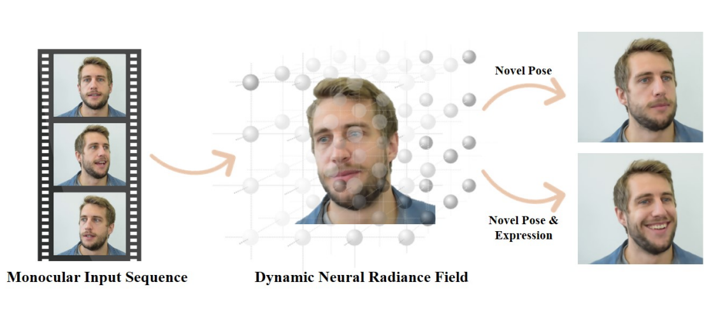

|
Guy Gafni
Video Diffusion Neural Rendering Human Avatars Pipio AI
I'm Co-founder and CTO at Pipio AI, where we're building a foundation video model for talking humans. A video diffusion model with perfect lip sync, designed for video editing workflows.
📍 Munich, Germany |
{kind=link}
Research
I'm interested in 3D Computer Vision and generative AI, specifically in video generation and editing of humans. I prefer generating and looking at pixels over improving a metric, and appreciate the use of 3D priors. Lately I've been heavily working on video diffusion models. |

|
EditYourself: Flexible Audio-Driven Generation and Manipulation of Talking Head Videos
NEW
John Flynn, Wolfgang Paier, Dimitar Dinev, Sam Nhut Nguyen, Hayk Poghosyan, Manuel Toribio, Sandipan Banerjee, Guy Gafni ArXiv 2026 project page · arXiv EditYourself is a diffusion-based video editing model for talking heads, enabling transcript-driven lip-syncing, insertion, removal and retiming of speech while preserving identity and visual fidelity. |

|
Semantify: Simplifying the Control of 3D Morphable Models using CLIP
Omer Gralnik, Guy Gafni, Ariel Shamir ICCV 2023 project page · arXiv 

A self-supervised method that utilizes the power of CLIP VLM to simplify the control of 3D morphable models, by learning a mapping from natural language to a 3DMM basis. |
|

|
NeRFace: Dynamic Neural Radiance Fields for Monocular 4D Facial Avatar Reconstruction
Guy Gafni, Justus Thies, Michael Zollhöfer, Matthias Nießner CVPR Oral 2021 project page · arXiv The first method to combine NeRFs with 3DMM to reconstruct and re-render human faces. |
Miscellanea |
| 🎓 Academic Service | Reviewer for ICCV, CVPR, SIGGRAPH and SIGGRAPH ASIA |
| 👩🏫 Teaching |
|
| ✨ Additional Stuff |
|
|
Feel free to steal this website's source code from Jon Barron. Do not scrape the HTML from this page itself, as it includes analytics tags that you do not want on your own website — use the github code instead. Also, consider using Leonid Keselman's Jekyll fork of this page. |